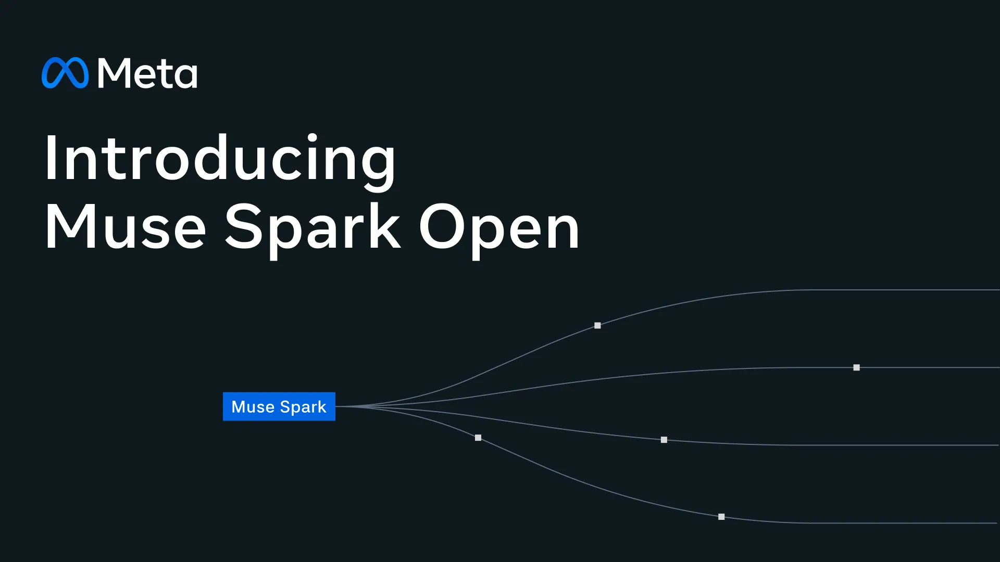
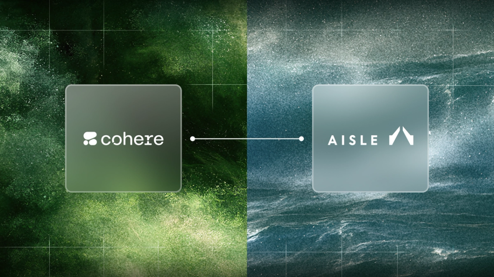
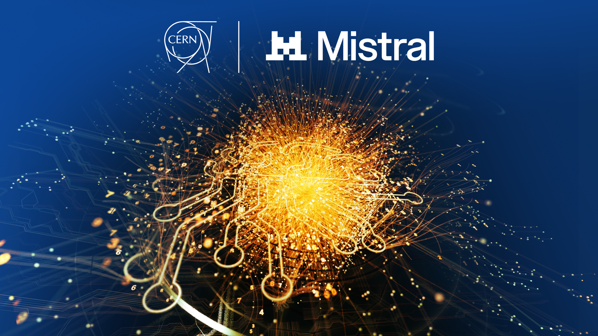

AI NEWS ISSUE 18
Meta, Muse Spark Open
공개하고 Mac 실행을
지원한다
Meta는 Muse Spark Open을 공개하며 Mac 실행 방법도 안내했습니다. Cohere는 보안 기업 AISLE 인수를 추진하고, CERN과 Mistral은 물리학 AI를 함께 연구합니다. 지금 쓸 수 있는 기술과 앞으로 지켜볼 계획을 나눠 살펴봅니다.
세 소식, 서로 다른 진행 단계
30초 요약
- 01 / 모델 공개
Mac에서도 직접 실행
Muse Spark Open을 내려받아
어떤 장비가 필요할까요?
직접 운영할 수 있습니다.
다만 큰 메모리를 갖춘 장비가 필요합니다. - 02 / 인수 추진
보안 문제를 찾고 고치기
Cohere가 AISLE 인수를 추진합니다.
발견한 뒤에는 무엇을 할까요?
AI로 취약점을 찾고
검증과 수정을 돕는 기술에 주목했습니다. - 03 / 연구 협력
물리학 실험을 돕는 AI
CERN과 Mistral이
어떤 연구를 하려는 걸까요?
입자 충돌 데이터를 학습하는
공통 모델을 연구합니다.
2026년 10월 15일자 발표와 관련 자료를 10월 16일 한국시간 기준으로 확인했습니다. 공식 발표와 공개 문서를 바탕으로 정리했으며, 도식은 이해를 돕기 위한 설명 자료입니다.
AI 소식을 읽을 때는 지금 사용할 수 있는지, 어떤 일을 돕는지, 아직 연구 단계인지를 구분하면 이해하기 쉽습니다. 이번 호에서도 세 발표의 목적과 진행 단계를 하나씩 짚어봅니다.
01 / META · MUSE SPARK OPEN
Muse Spark Open,
내려받아 직접 실행할 수 있습니다
Meta가 Muse Spark Open의 가중치를 공개했습니다. 가중치는 모델이 학습하며 정한 내부 수치로, 모델이 답을 만드는 데 쓰입니다. 이를 내려받아 정해진 이용 조건 안에서 직접 실행하거나 수정할 수 있는 방식을 오픈웨이트라고 부릅니다. 학습 데이터와 코드까지 모두 공개한다는 뜻은 아닙니다.

Meta는 코딩과 여러 단계에 걸친 도구 사용을 주요 용도로 소개합니다. 공식 사양에 따르면 텍스트·이미지·오디오·영상을 받아 텍스트로 답할 수 있습니다. 한 번에 참고할 수 있는 정보의 최대 범위는 약 100만 토큰입니다. 토큰은 AI가 정보를 나눠 처리하는 단위입니다. Meta의 개발자 발표 ↗
내 Mac에서도 바로 쓸 수 있을까요?
Mac 실행을 지원하지만, 필요한 장비의 규모부터 봐야 합니다. Meta가 Apple과 협력해 안내한 대표 구성은 통합 메모리 512GB를 갖춘 M5 Ultra Mac Studio 두 대를 연결하는 방식입니다. 256GB 구성 네 대를 연결하는 방법도 제시했습니다. 두 경우 모두 통합 메모리 합계는 1TB이며, Apple Silicon용 AI 도구인 MLX를 사용합니다. Meta의 Mac 실행 안내 ↗
공식 배포본의 실행 조건
실행 방식에 따라 필요한 메모리가 다릅니다
- NVFP4 · 저장 용량을 줄인 형식
- 최소 700GB공식 모델 안내서의 GPU 메모리 기준
- BF16 · 수치를 더 정밀하게 저장
- 약 2TB공식 모델 안내서의 GPU 메모리 기준
- Mac 대표 구성
- 512GB × 2대M5 Ultra · 통합 메모리 합계 1TB
따라서 평소 쓰는 노트북 한 대에 가볍게 설치하는 모델로 보기는 어렵습니다. 직접 운영하려면 장비와 전력, 장애 대응 비용을 고려해야 합니다. Meta는 외부 회사가 운영하는 모델을 네트워크로 호출하는 API 이용 방법도 안내합니다. 실제로 지원하는 입력 종류와 한 번에 참고할 수 있는 정보량은 실행 도구나 API 제공사에 따라 달라집니다. 이번 공개는 모델을 직접 운영할지, 외부 서비스를 통해 이용할지 선택할 폭을 넓혔다는 데 의미가 있습니다. 실행 도구·API별 지원 범위 ↗
일부만 계산하는데 왜 큰 메모리가 필요할까요?
모델 내부의 수치를 가리키는 파라미터는 총 8,160억 개입니다. 이 가운데 토큰 하나를 처리할 때 계산에 참여하는 수치는 약 420억 개입니다. 여러 부분으로 나눈 모델에서 필요한 부분을 골라 계산하는 MoE 구조를 쓰기 때문입니다.
META 공개 사양 · 단위 억 개
전체 중 일부를 골라 계산합니다
한 번에 계산하는 부분이 줄어도 모델 전체의 수치를 담을 메모리는 필요합니다. Meta의 배포 문서는 여기에 처리 중인 정보와 실행 프로그램을 위한 메모리도 더해진다고 설명합니다. ‘활성 파라미터가 적다’는 설명만으로 작은 장비에서도 실행할 수 있다고 판단하기 어려운 이유입니다.
오픈웨이트 모델의 이용 조건도 확인하세요
Muse Model License는 제품·서비스에 정해진 표시 문구를 요구합니다. 또 계열사를 포함한 합산 총매출이 연속된 12개월 동안 2천만 달러를 초과하는 사업자가 이 모델을 모델 서비스 형태로 제공하려면 사전 통지와 별도 계약이 필요하다고 명시합니다.
이 조항에는 내부 사용과 모델 서비스가 아닌 자체 제품 기능 등 예외가 있습니다. 공개 가중치를 내려받을 수 있다는 사실과 사업에 적용할 수 있는 조건을 함께 확인해야 합니다. 공식 모델 카드와 라이선스 원문 ↗
02 / COHERE · AISLE
Cohere는 AISLE 인수로
보안 역량을 넓히려 합니다
Cohere가 소프트웨어 보안 기업 AISLE 인수를 추진합니다. Cohere Cyber라는 보안 사업 조직을 통해 AI와 보안 기술을 결합할 계획입니다. 10월 16일 확인한 공식 발표 기준으로는 제안된 거래 단계이며, 인수가 완료됐다고 발표한 것은 아닙니다. Cohere 발표 ↗

보안 취약점은 다른 사람이 악용할 수 있는 소프트웨어의 약점입니다. AISLE은 코드에서 아직 알려지지 않은 취약점을 찾고, 실제 위험인지 확인하며 수정을 돕는 시스템을 개발합니다. Cohere는 자체 서버나 전용 클라우드에서 AI를 운영하려는 기업·정부의 수요에 이 기술을 연결하려 합니다.
이때 등장하는 표현이 주권형 AI(Sovereign AI)입니다. 조직이 데이터와 시스템의 운영 방식을 스스로 결정하고 통제하는 데 초점을 둡니다. 모델을 어디에서 실행할지, 누가 자료에 접근할지, 어떤 작업을 허용할지를 함께 정하는 것입니다.
‘500건 발견’이라는 숫자는 어떻게 봐야 할까요?
AISLE은 지난 1년간 100개가 넘는 코드베이스, 즉 프로젝트의 코드 묶음에서 신규 취약점 500건 이상을 발견했다고 밝혔습니다. 이들 취약점에는 공개 취약점을 구별하는 번호인 CVE가 부여됐다고 설명합니다. 이 수치는 회사가 집계한 발견 건수이며, 탐지 정확도나 다른 제품과의 성능 비교 결과는 아닙니다. AISLE의 실적 설명 ↗
협업한 개발자가 확인한 사례도 있습니다. 인터넷으로 데이터를 주고받는 도구 curl의 창립자 Daniel Stenberg는 10월 14일 글에서 AISLE이 취약점을 찾고 수정하는 데 기여했다고 설명했습니다. 이 과정에는 AI 도구를 쓰는 엔지니어들의 검증과 수정 작업이 함께 있었습니다. curl 유지관리자의 기록 ↗
보안 점검을 이해하는 흐름
문제를 찾은 뒤에도 확인할 일이 남습니다
- 01발견의심되는 코드 찾기
- 02검증실제 위험인지 확인
- 03수정·시험고친 뒤 정상 동작 확인
- 04검토·반영사람이 확인하고 적용
예를 들어 로그인 기능의 취약점을 고쳤다면, 보안 문제가 해결됐는지와 정상적인 로그인이 계속 가능한지를 함께 확인해야 합니다. AI 보안 도구를 볼 때도 찾아낸 문제의 수와 함께, 실제 위험을 확인하고 수정으로 이어지는 과정을 살펴볼 필요가 있습니다.
03 / CERN · MISTRAL
CERN과 Mistral은
물리학 실험을 돕는 AI를 연구합니다
유럽입자물리연구소 CERN과 Mistral이 장기 연구 협력을 위한 의향서에 서명했습니다. 목표는 Large Physics Model을 만드는 것입니다. 물리학 실험 데이터를 학습해 여러 분석 작업에 공통으로 쓸 수 있는 AI 모델을 뜻합니다. CERN 공식 발표 ↗

연구진은 대형강입자충돌기(LHC)에서 일어나는 양성자 충돌을 컴퓨터로 모사한 데이터를 학습에 사용할 계획입니다. 이를 바탕으로 충돌 과정을 다시 파악하고, 입자의 종류를 구별하거나 특이한 신호를 찾는 데 활용하려 합니다. 입자를 관측하는 장치인 검출기의 설계를 평가하는 일도 연구 대상입니다.
이처럼 많은 데이터로 미리 학습한 뒤 여러 작업에 재사용하는 기반 모델을 파운데이션 모델이라고 부릅니다. 이번 연구의 초점은 여러 물리학 분석이 함께 사용할 기반을 만드는 것입니다.
CERN의 보유 자료와 학습 계획
보유한 자료와 학습할 데이터를 구분합니다
LHC의 누적 실험 데이터
약 100만 테라바이트
시뮬레이션으로 만든
양성자 충돌 데이터
아직은 공동 연구의 시작 단계입니다. 공식 발표에는 완성된 모델의 출시일이나 성능 결과가 담기지 않았습니다. 공통 모델을 썼을 때 기존 분석보다 얼마나 정확하고 효율적인지는 앞으로 연구를 통해 확인할 부분입니다.
HELLO, HUMAN! VIEW
새 AI 소식을 볼 때,
이 세 가지를 물어보세요
세 소식에서 우리가 가져갈 질문은 조금씩 다릅니다. 모임에서는 다음 질문을 바탕으로 각 기술이 우리에게 어떤 의미가 있는지 이야기해볼 수 있겠습니다.
- 직접 운영할 이유가 있나요? Meta 소식에서는 실행할 수 있다는 사실과 함께, 필요한 장비와 운영 부담을 살펴봅니다.
- 결과를 어떻게 확인하나요? Cohere·AISLE 소식에서는 발견 건수와 함께, 실제 위험을 확인한 근거와 수정 과정을 봅니다.
- 지금 쓸 수 있나요, 앞으로의 계획인가요? CERN 소식에서는 아직 공동 연구 단계이며, 출시일과 성능 결과는 발표되지 않았다는 점을 확인합니다.
도구를 직접 써볼 때는 한 가지 작업을 골라, 결과를 어떻게 확인할지 정하는 것부터 시작하면 좋겠습니다. 이번 호에서는 보안 점검 결과 한 건을 함께 읽어보는 방법을 제안합니다. 아래 도구는 그 출발점으로 골랐습니다.
모임에서 써볼 도구 · 공식 문서 기준
취약점 점검,
이 도구부터 써보세요
앞서 살펴본 보안 점검을 직접 경험해보고 싶다면, 사용 중인 AI 코딩 도구에 맞춰 하나를 골라보세요. 플러그인은 도구에 기능을 더하는 확장 프로그램이고, 스킬은 AI가 따라갈 작업 절차입니다. 코드를 다루는 작업이므로 개발 경험이 있는 멤버와 함께 시작하면 이해하기 쉽습니다.
-
Codex에서 프로젝트를 점검하려면
Codex Security
프로젝트 전체나 특정 폴더를 점검하는 OpenAI 플러그인입니다. 취약점이 의심되는 코드를 찾고, 확인한 근거와 검증 결과를 정리합니다. 처음에는 연습용 프로젝트의 한 폴더를 골라보세요.
간단 설치 · Codex 앱
- Codex 앱에 로그인한 뒤, 공식 설치 페이지의 Add Codex Security Plugin 버튼으로 플러그인을 추가합니다.
- 설치 후 Try in chat을 누르고 점검할 프로젝트 폴더를 선택합니다. 요청을 보내면 점검이 시작됩니다.
요청 예시 “Codex Security로 이 프로젝트의 로그인 처리 폴더를 점검해줘. 문제가 있는 코드와 그 이유, 실제로 확인한 내용을 설명해줘.”
공식 점검 안내 ↗ -
Claude Code·Cursor에서 코드를 만들면서
Semgrep Guardian
AI가 코드를 작성하는 과정에 보안 검사를 붙이는 플러그인입니다. Semgrep의 보안 규칙으로 생성된 파일을 검사하고, 문제가 발견되면 AI에게 수정을 요청합니다.
간단 설치 · Claude Code / Cursor
Claude Code에서는 대화창에
/plugin을 입력하고, Discover → Semgrep → Install 순서로 선택합니다.Cursor에서는 설정의 Plugins에서 Semgrep을 찾아 Add to Cursor를 누릅니다.
두 도구 모두 설치 후 대화창에서 아래 명령으로 초기 설정을 마칩니다. 터미널에서 검사를 실행하는 Semgrep CLI도 함께 설치됩니다. Cursor는 설정 후 재시작합니다.
/setup-semgrep-plugin요청 예시 “Semgrep 검사 결과에서 가장 먼저 고칠 항목과 그 이유를 알려줘.”
공식 설치·사용 안내 ↗ -
이번 코드 변경을 중심으로 검토하려면 · Claude Code·Codex
Trail of Bits의 differential-review
보안 전문 업체 Trail of Bits가 공개한 스킬입니다. 이번에 바꾼 코드와 과거의 변경 이력을 함께 살펴보며, 변경으로 보안 문제가 생기지 않았는지 검토하는 데 초점을 둡니다.
간단 설치 · Claude Code / Codex CLI
Claude Code 대화창에서 아래 명령으로 마켓플레이스를 추가합니다.
/plugin marketplace add trailofbits/skills이어서
/plugin menu를 열고 differential-review 플러그인을 선택해 설치합니다.터미널에서 사용하는 Codex CLI가 설치돼 있다면 아래 두 줄을 차례로 실행합니다.
codex plugin marketplace add trailofbits/skills codex plugin add differential-review@trailofbits요청 예시 “differential-review 스킬로 이번 로그인 기능 변경을 검토해줘. 다른 사람의 정보에 접근할 수 있는 문제가 생겼는지 확인해줘.”
공식 스킬 목록·설치 안내 ↗
점검이 끝나면 결과 한 건을 골라 ‘무슨 문제인지 → 실제로 확인됐는지 → 어떻게 고칠지’를 함께 읽어보세요. 개발 경험이 없는 멤버도 “어떤 정보가 노출될 수 있나요?”, “고친 뒤에는 무엇을 확인해야 하나요?”라고 질문하며 참여할 수 있습니다.
공식 문서를 바탕으로 고른 도구이며 직접 비교 시험은 하지 않았습니다. 설치·설정을 마친 뒤 요청 예시의 기능·폴더 이름을 자신의 프로젝트에 맞게 바꿔 사용하세요. 이용 조건은 각 공식 안내에서 확인할 수 있습니다.
SOURCES
읽은 자료
- Meta, Build with Muse Spark Open ↗ 10월 15일 · Apple 협력·MLX 실행 구성·배포 경로
- Meta, Muse Spark Open 문서 ↗ 전체·활성 파라미터·문맥·장비 조건
- Meta, Muse Spark Open 실행 안내 ↗ 실행 도구·API 제공사별 입력과 문맥 길이의 차이
- Meta, 공식 모델 카드와 Muse Model License ↗ 공개일·메모리·모델 이용 조건
- Cohere, AISLE 인수 추진 발표 ↗ 10월 15일 · 제안된 거래·보안 사업 방향
- AISLE, 지난 1년의 취약점 발견 기록 ↗ 10월 14일 · 500건 이상·100개 이상은 발표사 집계
- Daniel Stenberg, A curl audit by Aisle ↗ 10월 14일 · 유지관리자가 설명한 협업·수정 기여
- CERN, Mistral과의 과학 AI 연구 협력 ↗ 10월 15일 · 연구 목표·학습 계획·보유 데이터
- OpenAI, Codex Security 점검 안내 ↗ 플러그인의 점검 범위·검증·결과 확인 방법
- OpenAI, Codex Security 설치 안내 ↗ 앱에서 플러그인을 추가하고 프로젝트를 선택하는 순서
- Semgrep, Guardian 공식 문서 ↗ Claude Code·Cursor 플러그인과 코드 검사 방식
- Trail of Bits, 보안 스킬 저장소 ↗ differential-review의 용도·지원 도구·설치 안내
자료 확인일은 2026년 10월 16일입니다. 확인한 공식 원문은 영문 자료입니다. 회사가 발표한 사양·계획과 협업 개발자가 확인한 내용을 구분해 정리했습니다. 모델 실행, 보안 점검, 추천 도구의 비교 시험을 직접 수행한 기사는 아닙니다.